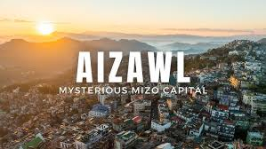
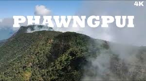
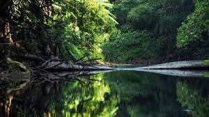

Aizawl

The capital city, perched on a ridge, offering stunning views of the surrounding hills and valleys, with cultural sites like the Mizoram State Museum and the Durtlang Hills.
Phawngpui National Park

Home to the Phawngpui Tlang (Blue Mountain), the highest peak in Mizoram. The park is a treasure trove of flora and fauna and is considered a sacred place by the locals.
Dampa Tiger Reserve

Located in the western part of the state, it is one of the major tiger reserves in India and is known for its biodiversity and dense tropical forests.
Vantawng Falls

The highest and most spectacular waterfall in Mizoram, surrounded by lush green forests, making it a major natural attraction.
Reiek Tlang

A popular tourist spot and a prominent mountain peak near Aizawl, offering trekking opportunities and a traditional Mizo village built on the peak to showcase Mizo culture.